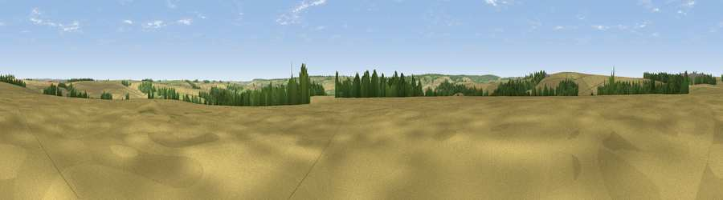

Stony Hill
#32841 in England · top 65% of its area beats it · near Fisherton de la MereThe view, rendered

A 360° render of this exact spot computed from the terrain model, tree cover and land cover — summer colours, afternoon light, calibrated against photographs of famous viewpoints. Real trees, hedges and buildings will differ in detail.
The panorama
Grey silhouette: terrain skyline in each direction (720 bearings, Earth curvature and refraction included). Dashed green: skyline with trees (+15 m) and buildings (+8 m) as obstacles. Blue strip: how far the ground is visible on each bearing.
Where the view opens
Wedge length = distance to the farthest visible ground on that bearing (vegetation-aware). Rings at 10, 25 and 50 km.
What fills the view
65% cropland · 21% grassland · 13% woodland · 1% built-up
Angular shares of the visible panorama (visual magnitude), not map area. Landscape diversity 0.40 (0–1 Shannon).
Key numbers
More beautiful places nearby
The staircase of upgrades: each row has a higher view potential than everything closer. Driving times are estimates from straight-line distance, calibrated against real road routing — check an actual route before setting out.
| Place | Direction | Drive | Score |
|---|---|---|---|
| Viewpoint near Codford | W · 2 km | ~5 min | 60.2 |
| Hydon Hill | SSE · 12 km | ~23 min | 61.2 |
| Viewpoint near West Lavington | N · 13 km | ~23 min | 62.1 |
| Viewpoint near Fonthill Gifford | SW · 13 km | ~24 min | 64.2 |
| Viewpoint near Edington | NNW · 14 km | ~25 min | 65.4 |
| Viewpoint near Edington | NNW · 14 km | ~26 min | 71.9 |
| Viewpoint near Bratton | NW · 15 km | ~27 min | 73.2 |
| Cley Hill | WNW · 17 km | ~29 min | 76.8 |
51.16112, -2.00321 · source: osm peak · position refined by local search. Computed location — check access rights before visiting.